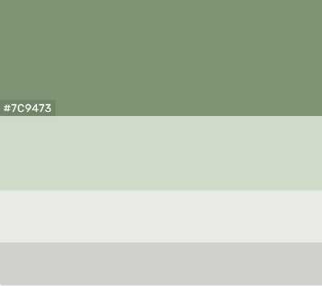

Site Plan
Typography
Color in Text
Most text will be black or a tint lighter including the headings. As stated previously, I want the site to feel like a newspaper.
Fonts
To stick with the newpaper theme, I chose the font 'Roboto Slab' for the h1 and h2 headings, and then 'jost' for all other headings and paragraph text.